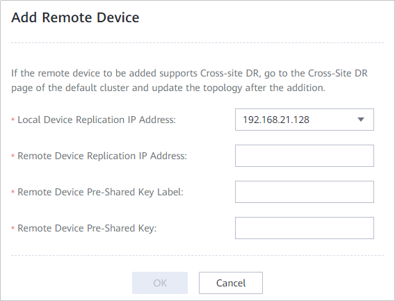

This operation enables you to establish a logical connection between a local device and a remote device for data transmission between the two devices.
Prerequisites
The local and remote devices communicate properly.
Procedure
- Log in to DeviceManager of the local device.
- Choose .
- Click More on the right of a desired replication cluster and select Add Remote Device.
The Add Remote Device page is displayed.


You can also click the name of the desired replication cluster to go to the cluster details page and select the Remote Devices tab.
- Set parameters for the remote device. Table 1 describes related parameters.
Table 1 Remote device parameters Parameter
Description
Local Device Replication IP Address
Replication network IP address of the local device.
NOTE:You can select any replication network IP address of the local device. After the initial connection is complete, the system automatically connects all replication links between the local and remote devices.
Remote Device Replication IP Address
Replication network IP address of the remote device.
NOTE:If there are multiple remote devices, select any of them.
Remote Device Pre-Shared Key Label
Pre-shared key label for the remote device.
[Value range]- A pre-shared key label contains 5 to 32 characters.
- A pre-shared key label can contain only letters, digits, and underscores (_), and must start with a letter.
NOTE:Enter the pre-shared key label configured on the remote device.
Remote Device Pre-Shared Key
This parameter corresponds to the remote device pre-shared key label. During identity authentication, you need to enter both the pre-shared key label and pre-shared key configured on the remote device.
[Value range]- A pre-shared key contains 8 to 31 characters.
- A pre-shared key must contain special characters (excluding <>'&") and any two types of the following characters: uppercase letters, lowercase letters, and digits.
- Click OK.